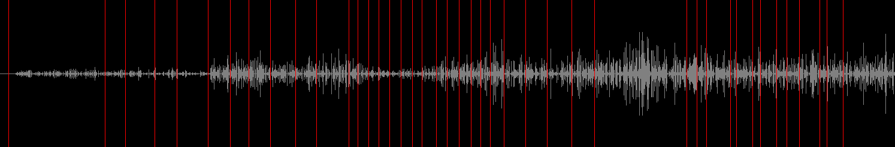

I'm an aspiring game developer currently attending the University of Maryland as a Computer Science Major. In addition to game development, I have a passion for data science and networking. This site is meant to showcase the projects I'm currently working on, and serve as a digital archive of my works to date. It's an active work in progress; apologies in advance if you encounter bugs or other issues.
Projects
Gravity Gauntlet
Gravity Gauntlet is a 2D physics-based platformer where the objective is to explore a procedurally generated cave until you reach your goal, all while avoiding enemies that spawn throughout the cave. I've been working on this project for two years now, and I'm expecting to publish it on Android and iOS by September of 2019.

Timed Event Editor
Unity's built-in sequencing utility, Timeline, allows developers to assign certain events, such as particle systems, camera movements, and animations, to timestamps. However, Timeline doesn't allow developers to interact with generic events directly, meaning that you can't time function calls from custom scripts natively. To achieve this functionality, I began re-creating the Timeline from scratch to include custom events. I'm pleased with its feature set so far, but I still have far to go to get to the level of polish of Timeline.
Below is a song that I've sequenced with the Timed Event Editor.
Radar
Radar was a proof-of-concept build I made for a larger game that's in the beginning stages of development. I made Radar to showcase the game's central mechanic - that the player is blind to the world and has to navigate using radar.